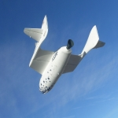

Home > Transportation
Transportation
{kind=link}
Fuels of the Future
Now that we are into the 21st century, lots of new technologies are being developed, and many scientists feel that it's time to create fuels to supplement or even replace fossil fuels. These scientists want to eliminate our dependency on fossil fuels for several reasons. The high rate of fossil fuel consumption causes considerable damage to our environment because carbon dioxide (CO2) is emitted when fossil fuels combust. The extra carbon dioxide in the environment can cause global climate changes. Over the last 150 years, the use of fossil fuels has caused the amount of carbon dioxide in the atmosphere to increase by 25%. The combustion of fossil fuels also creates other types of pollution such as smog, acid rain, and air pollution. This type of pollution not only harms the environment, but also the health of animals and humans living in it. Also, fossil fuels are also a nonrenewable resource so they will eventually run out. At this point, it will be crucial that we have already established alternate sources to replace fossil fuels.
{kind=link}
The Future of Space Travel
After early successes in space, much of the public saw intensive space exploration as inevitable. Those aspirations are remembered in science fiction such as Arthur C. Clarke's A Fall of Moondust and 2001: A Space Odyssey, Roald Dahl's Charlie and the Great Glass Elevator, Joanna Russ's 1968 novel Picnic on Paradise, and Larry Niven's Known Space stories. Lucian in the 2nd century AD in his book True History examines the idea of a crew of men whose ship travels to the Moon during a storm. Jules Verne also took up the theme of lunar visits in his books, From the Earth to the Moon and Around the Moon. Robert A. Heinlein’s short story The Menace from Earth, published in 1957, was one of the first to incorporate elements of a developed space tourism industry within its framework. During the 1960s and 1970s, it was common belief that space hotels would be launched by 2000. Many futurologists around the middle of the 20th century speculated that the average family of the early 21st century would be able to enjoy a holiday on the Moon. In the 1960s, Pan Am established a waiting list for future flights to the Moon, issuing free "First Moon Flights Club" membership cards to those who requested them.